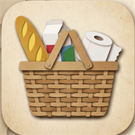

🧪 Deneme modu — liste yalnızca bu tarayıcıda duruyor
📡 İnternet bağlantısı yok — eklediklerin bağlanınca gönderilecek

Alışveriş Sepetim
Ailenin ortak alışveriş listesi
Aile adı
PIN (4 rakam)
👁
Ailedeki herkes aynı aile adını ve PIN'i kullanır.
Beni hatırla (bir daha PIN sorma)
Devam
Aile adını ya da PIN'i yanlış yazmış olabilirsin.
↩ Geri dön, düzelt
➕ Yeni aile listesi oluştur
Alışveriş Sepetim
Bu telefonu kim kullanıyor?
➕ Listede yokum, adımı yazacağım
Bu telefonu kim kullanıyor?
Bir ürünü aldığında "kim aldı" kısmında bu ad yazacak.
Başla
Alışveriş Sepetim
🔴 Acil
⚪ Acil değil
✅ Alındı
· 2 gün sonra silinir
Liste boş.
Eksik bir şey varsa aşağıdaki
+
ile ekle.
🟢 WhatsApp'ta haber ver
+